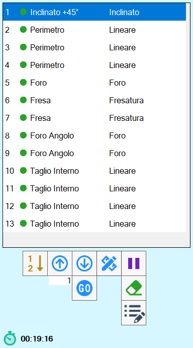
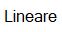
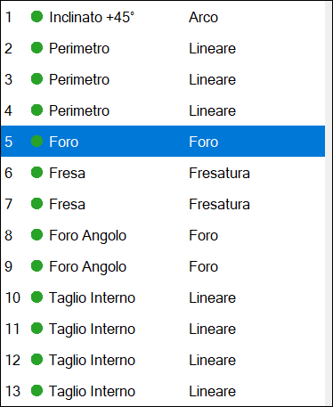
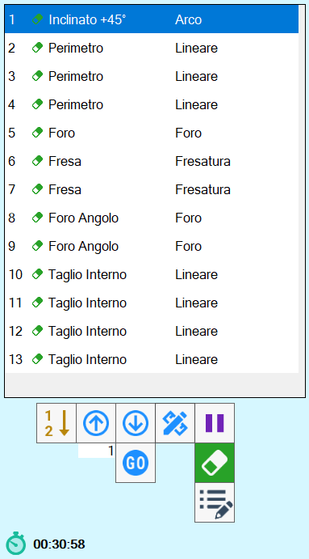

I tagli che la macchina deve eseguire sono riportati all’interno di questo elenco.
Utilizzando la lista dei tagli, l’operatore può:
Cambiare l’ordine di esecuzione dei tagli.
Modificare le caratteristiche di un taglio.
Inserire pause tra un taglio e l’altro.

Elementi della lista

Attiva/Disattiva taglio | |
 | Tipologia di taglio |
 | Tipologia di lavorazione |
Funzioni
La disposizione dei tagli nella lista di destra, indica l’ordine con il quale essi vengono tagliati.
Con i pulsanti sottostanti, è possibile modificare questo ordine, oppure inserire una pausa nell’esecuzione delle operazioni tra un taglio e l’altro.
 | Spostamento con frecce |
 | Spostamento alla posizione desiderata |
 | Selezione dell’ordine dall’area di lavoro |
 | Pausa |
 | Elimina taglio |
 | Modifica taglio |
 | Proprietà aggiuntive del pezzo |
In fondo alla lista viene inoltre mostrato:
Stima tempo di taglio |
La stima del tempo di taglio si aggiorna ogni volta che viene eseguita un’operazione sui tagli.
Spostamento con frecce
Con questi pulsanti è possibile spostare il taglio selezionato nella posizione superiore o inferiore.
Nel seguente esempio si desidera spostare il taglio posto in quinta posizione e spostarlo in alto di una.
Prima dello spostamento | Dopo lo spostamento |
 |  |
Spostamento alla posizione desiderata
Questa funzione permette di spostare l’elemento selezionato alla posizione della lista indicata nella casella di testo adiacente.
In questo esempio si desidera fare ricoprire la seconda posizione al quinto taglio dell’elenco. Sarà necessario inserire il valore “2“ nella casella e successivamente premere il pulsante.
Prima dello spostamento | Dopo lo spostamento |
 |
Selezione dell’ordine dall’area di lavoro
Tramite questa funzione è possibile scegliere l’ordine dei tagli, direttamente dall’area di lavoro.
Premendo il pulsante, il programma scrive su ciascun taglio un numero che indica la posizione che occupa nella lista.

Per cambiarne l’ordine, cliccare in sequenza all’interno del taglio che si desidera avere come primo, poi il secondo e cosi via.
Una volta finito, ripremere il pulsante per convalidare la scelta fatta.
Pausa
È possibile inserire una pausa tra l’esecuzione di un taglio ed il successivo.
Il programma effettuerà tutti i tagli precedenti alla pausa, per poi fermare la macchina e attendere il comando di Start da parte dell’operatore.

La pausa viene sempre inserita dopo l’esecuzione del taglio selezionato.
Può essere utilizzata, ad esempio, per cambiare utensile.
Elimina taglio
Una volta premuto il pulsante, l’icona di una gomma viene affiancata a ciascuna voce dell’elenco.
Premere quindi un taglio per eliminarlo definitivamente.
